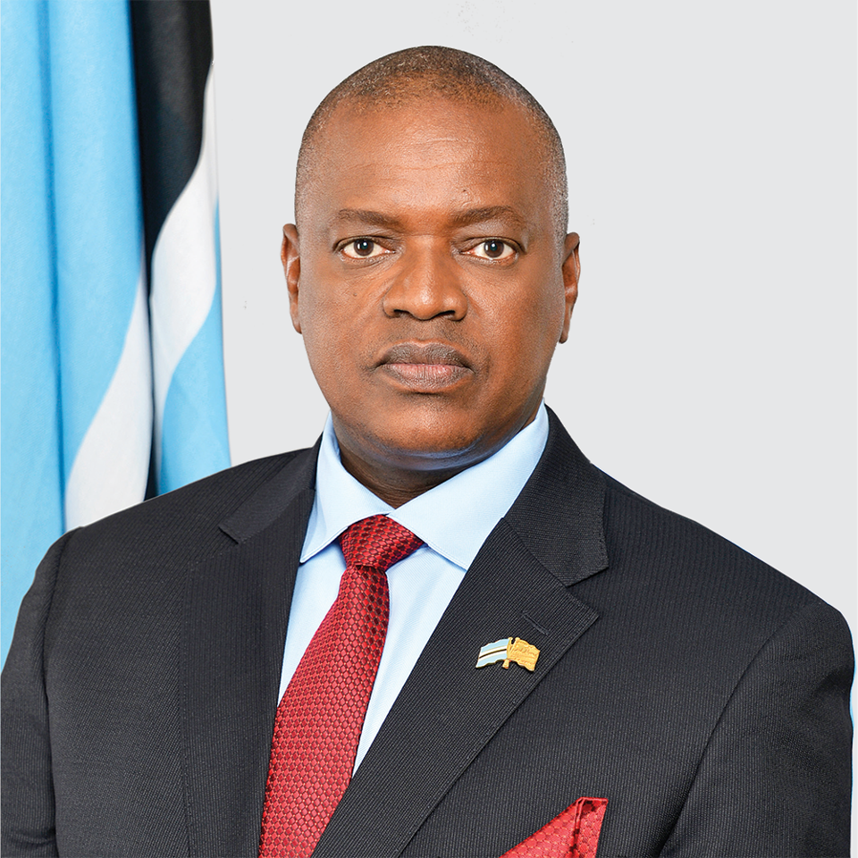
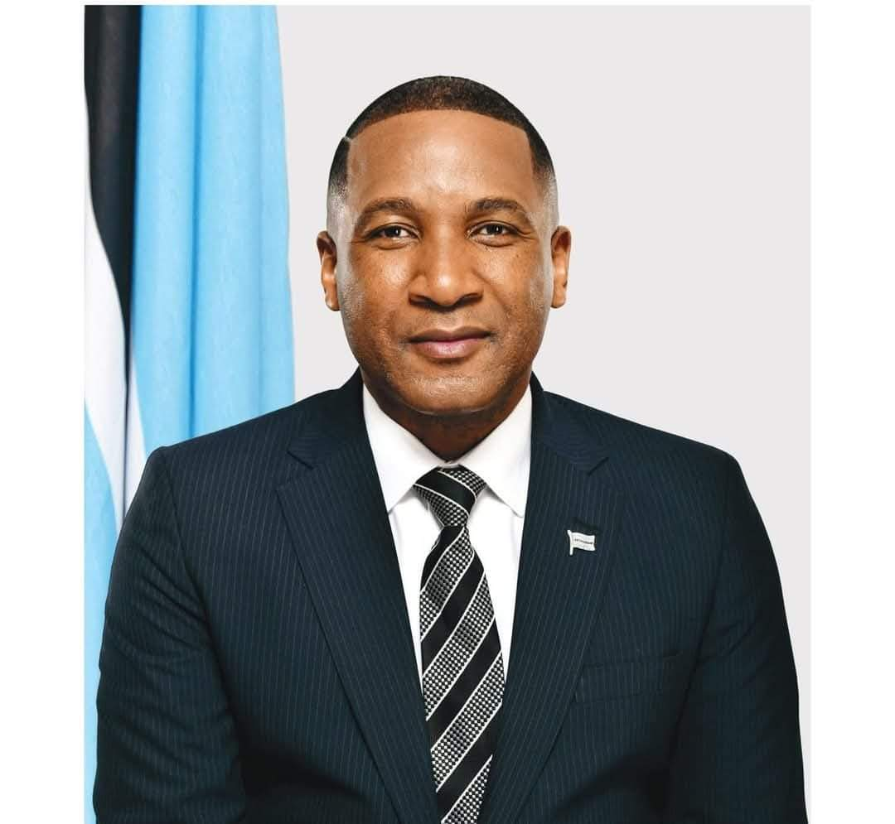

Presidents of Botswana
Sir Seretse Khama – Botswana's founding president, led the country from independence in 1966 until 1980.

Quett Masire – President from 1980 to 1998, known for promoting education and democracy.

Festus Mogae – Served from 1998 to 2008, focusing on economic growth and HIV/AIDS awareness.

Ian Khama – Led from 2008 to 2018, emphasizing discipline and infrastructure development.

Mokgweetsi Masisi – President from 2018, focused on education reform and innovation.
Duma Boko – The latest president, noted for his progressive political stance and legal background.
